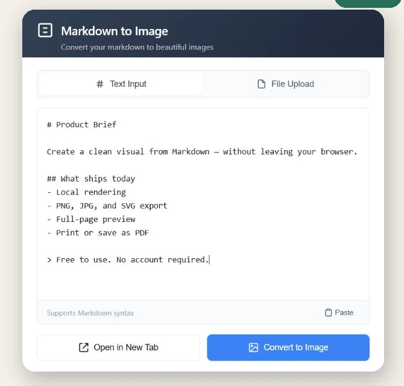

Markdown to Image is a free Chrome extension for pasting or opening .md and .txt files. Export PNG, JPG, or SVG, or open a full-page preview and print it to PDF.
Free unlimited use · No account · No advertising · No extension analytics
PNG, JPG & SVG
Copy image
Full-page preview
Print to PDF
Actual extension interfaceChrome · v2.0.0

Write, paste, or upload Markdown without leaving the browser workflow.
Price
Free
Account
Not required
Processing
Local in the extension
Outputs
PNG · JPG · SVG · PDF-ready
Focused by design
Useful output, without another cloud editor.
Markdown to Image does one job: it turns text you already have into a clean visual or a readable full-page document.
01
Your document stays in the extension.
Markdown, uploaded text files, rendered HTML, previews, and generated images are processed on your device. The extension does not upload document content to a developer-operated server.
If your Markdown contains an externally hosted image, Chrome may still request that image from its original host.
02
Choose the format your next step needs.
Download PNG, JPG, or SVG. A generated PNG can also be copied directly to the clipboard.
03
Keep long documents readable.
Open a full browser tab with an automatic table of contents, then print or save the page as PDF.
Three short steps
From Markdown to a shareable artifact.
1
Add your Markdown
Type, paste, drag, or upload a .md or .txt file.
2
Review the rendered result
Check headings, lists, tables, links, code blocks, and the final document length.
3
Export or open the full page
Copy a PNG, download an image format, or open the reading view for PDF printing.
Made for technical communication
Release notes, README excerpts, code notes, and documentation snippets.
No. Document content is processed by the extension on your device and is not uploaded to a developer-operated server. If the document references a remote image, Chrome may request that image from its original host.
Which formats can it export?
You can download PNG, JPG, and SVG files. You can also copy a generated PNG to the clipboard.
Can it turn Markdown into PDF?
The extension opens Markdown in a full-page preview with a table of contents. Use Chrome's Print dialog to print the page or save it as a PDF.
Does it require an account or subscription?
No. All current features are free, there is no account, and there is no trial counter, subscription, license key, or advertising.
Why does it request clipboard permissions?
Clipboard read access is used only when you choose Paste. Clipboard write access is used only when you choose Copy Image.
Free · Local · Account-free
Keep Markdown close. Share the result anywhere.
Install Markdown to Image from the Chrome Web Store and export your first document in the format you need.